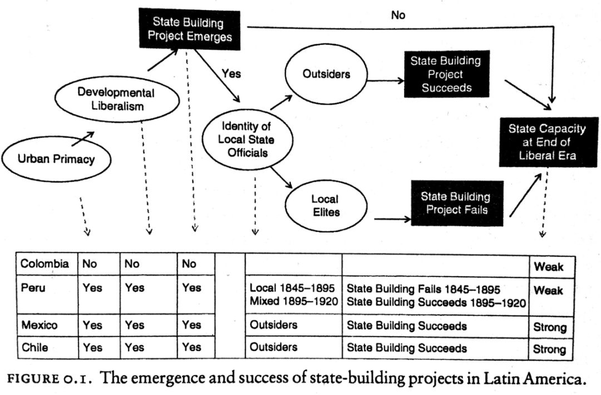

收录于合集
#历史政治学 58 个
#比较政治学 121 个
State Building in Latin America是天普大学（Temple University）政治学副教授Hillel David Soifer在其博士论文基础之上形成的著作，正如其简洁明了的书名一般，作者的目的就是在于探索拉丁美洲的国家建设历程。

这本书的逻辑是十分清晰的：在前言部分，作者立足拉美历史，在“国家建设”的视域下依次回答了两个问题：国家建设何以开始？强国家何以实现？接着对诸如“国家能力”的概念进行了说明，并选取了智利、墨西哥、秘鲁和哥伦比亚四个案例。第一章，作者关注国家建设的出现——因为并不是所有的拉美国家都经历了国家建设这一步骤。作者首先对最强有力的竞争性解释——地理因素进行了排除，进而提出了自己的观点：能否开启国家建设的关键在于是否存在中心型城市，并通过公共物品和经济偏好两条机制予以说明。接着，作者通过量化研究予以论证，然后进而对四个案例进行深入分析。第二章作者开始关注国家建设的成败，或曰强国家何以形成。其论证步骤也是类似的。首先提出自己的理论，地方行政官员的身份（中央任命还是地方精英）是能够成为强国家的关键。接着是在两种因果机制层面予以论述，不同的官员任命模式对报酬的期待以及职位的认知有着天壤之别。再次是在定量数据上获得支持，最后是对四个案例的分析。第三章的对其他国家形成理论的竞争性解释的反思，包括殖民遗产以及战争学说等等。第四、第五和第六章则是分别论述了国家能力对教育、税收以及军事的影响，即国家与发展之间的关系，其论证逻辑亦是量化作证+案例分析。最后一章是对全文的总结。
作者认为，这本书的主要贡献主要有两点： 首先是将“观念”带回来（bring ideas into development），这主要体现在国家领导人在“是否开启国家建设”和“如何进行地方治理”等方面的观念影响了国家建设的进程 ； 其次，作者区分了“国家建设的出现”以及“国家建设的成功”这对被前人模糊的概念 ，因为所有的国家能力的前提是该国已经进行了国家建设的努力——二者的区别与联系，可详见作者在The Logic of Critical Juncture一文中对“许可性条件”（permissive condition）与“生成性条件”（productive condition）的论述。
如果仅从方法的角度来看，State Building in Latin America的确不失为一篇优秀的博士论文：逻辑清晰、资料详实、论证合理、不同方法运用恰当，等等。然而通篇读下来，却总给读者们一种似乎缺少了什么的感觉。
一种原因可能是，Soifer的研究似乎并没有提出一条明确的理论，他提出了一种很好的研究视角，但很难说形成了一种具有较好概括性、抽象性的理论。主要可能是，国家理论的研究已浩如烟海，既有的研究已经太多了。国内已经有一些不错的总结，近几年的如张长东老师的《比较政治学视角下的国家理论发展》，曾毅老师的《现代国家建构理论：从二维到三维》以及黄振乾同学在公众号上写过的《政治学研究的第五交响曲：国家建设理论的进展和缺憾》、《利维坦的碎片：国家是如何形成的？》等等，这些研究已经对国外动态进行了不错的梳理。国家研究的前辈已经产生了太多的经典，在古老的领域实现突破性进展的确需要学术勇气。
于是我们可以认为，斯考切波为了生存（当然也是内心追求）而离开了曾经耕耘的领域，如今已经完全投入到了本国政治研究并做的有声有色。但摩尔反而认为，当斯考切波不再努力成为“小摩尔”的时候，她才真正地实现了自我超越；于是我们就不难理解，为什么大家都强调小处着眼、尽量避免研究宏大议题。基于历史的社会科学研究确乎面临举步维艰的窘境，他们所做的那些first- order questions似乎很难实现超越。Soifer的导师组成员包括Jorge Domínguez、Steven Levitsky、John Coatsworth以及Paul Pierson，无论是拉美研究还是方法论方面都属业内翘楚。然而从简历来看，Soifer的学术生涯似乎并不顺利，此书正式出版是他博士毕业九年之后的事情，而直到2016年Soifer才最终评上副教授。这是否表明历史研究在美国政治科学的式微——从某种意义上来说的确如此。在这里不仅想到了《利维坦的诞生》的作者托马斯·埃特曼的感慨，他一直吐槽政治学人太过于关注“你要解释什么”“自变量和因变量是什么”“用的是什么数据”“用的是什么案例和方法”等等——于是他在哈佛大学政府系徘徊了几年后，最终选择了纽约大学的社会学系任教。
埃特曼说：“然而对于那些从历史研究来关注欧洲、欧洲等非美国本土的学者及其观点来说，在政治学系就没有发展空间，因为欧洲在美国政治学中的地位已经变得越来越不重要了，仅限于国际政治狭小的区域。”然而，事实真的是如此么？埃特曼诉说的是一种现实，抑或是夹杂了太多的个人情感？念及于此，忽想要摘一段《天龙八部》中的描写。其背景是鸠摩智欲以少林七十二绝技来交换六脉神剑图谱，待其演练完拈花指、多罗叶指、无相劫指三门武功之后，天龙寺诸位高僧不禁也为之心动——
本因道：“师叔，明王远来，其意甚诚。咱们该当如何应接，请师叔见示。”枯荣大师道：“本因，咱们练功习艺，所为何来？”本因没料到师叔竟会如此询问，微微一愕，答道：“为的是弘法护国。”枯荣大师道：“外魔来时，若是吾等道浅，难用佛法点化，非得出手降魔不可，该用何种功夫？”本因道：“若不得已而出手，当用一阳指。”枯荣大师部道：“你在一阳指上的修为，已到了第几品境界？”本因额头出汗，答道：“弟子根钝，又兼未能精进，只修得到第四品。”枯荣大师再问：“以你所见，大理段氏的一阳指与少林牛花指、多罗叶指、无相劫指三项指法相较，孰优孰劣？”本因道：“指法无优劣，功力有高下。”枯荣大师道：“不错。咱们的一阳指若能练到第一品，那便如何？”本因道：“渊深难测，弟子不敢妄说。”枯荣道：“倘若你再活一百年，能练到第几品？”本因额上汗水涔涔而下，颤声道：“弟子不知。”枯荣道：“能修到第一品么？”本因道：“决计不能。”枯荣大师就此不再说话。
武功高低，全在练武之人。埃特曼的抱怨虽然体现了美国政治学的一大现实，但依旧难免他在《利维坦的诞生》之后无甚出彩作品。在2010年 Comparative Political Studies 第8期和第9期的合订版中，埃特曼书写的那篇英国民主化的研究并没有出奇的优秀，反而在另一位后辈、也是组稿人之一的Denial Ziblatt面前黯然失色。之前我们政观对Ziblatt的文章多有编译，关注政观的同仁想必对这位青年才俊的发型印象深刻。他出版的最新著作Conservative Parties and the Birth of Democracy在去年斩获了包括美国社会学会历史社会学分会的巴林顿·摩尔最佳著作奖、美国政治学会的伍德罗·威尔逊基金奖等重要奖项。这本书用严谨的论证过程、丰富的历史史料讲述了保守主义政党在维持民主巩固中所发挥的重要作用。
民主研究是当代比较政治学最热门的话题，而欧洲的民主化更可谓被挖掘的最深入的领域。Ziblatt一方面要与摩尔、鲁施迈耶、鲁伯特等从事比较历史研究前辈对话，同时也要和林茨、奥唐奈、施密特等转型学学者对话，甚至还要兼顾鲍什、阿西莫格鲁等来自理性选择学派的研究。但不得不承认，Ziblatt的这本著作相较于之前的博士论文已经有了更为厚重的历史沉淀。他区分了两种民主化路径，前者如进程缓慢却稳定的英国，民主化随着历史的演进不断提升；后者如德国道路，在民主、革命、动荡中多有反复。Ziblatt认为， 并非是自由主义者们所想象的中世纪以来的“光荣传统”，亦非社会主义者强调的工人运动与大众反抗，而是保守主义政党，才是维系民主的关键。 只有当代表传统势力的保守党人相信自己的利益不会受损时，他们才会开启并维持民主政治——这隐然也是强调精英对“再分配”机制的恐惧，作者对英国和德国这两个民主化研究中被提及了无数次的正反案例又进行了新的诠释，并在最后部分对理论进行了适当的拓展：保守党在大众选举出现即已形成的国家，如智利、哥伦比亚、哥斯达黎加与乌拉圭，其民主政治的稳定性都要强于该地区的其他国家。
Ziblatt的研究表明，即便是民主研究，即便是以欧洲作为研究对象，优秀的比较历史研究者依旧可以做出出彩的作品。
对于那些基于历史的社会科学研究，埃特曼的冷淡与Ziblatt的冷静以及还在踽踽前行的Soifer，所谓“不忘初心方得始终”最关键的依旧是坚守与坚持。于是，James Mahoney如是说：
I had in mind scholars who strove for and could recognize perfectionism in the field of macrocausal analysis. I knew full well that this group was a minority within the social sciences. But it was the group who I cared about the most and to whom I wanted to speak most directly.
撰写：释启鹏
编辑：吴温泉
审读：何家丞


政文观止
微信扫一扫赞赏作者 __赞赏
已喜欢，对作者说句悄悄话
取消 __
发送给作者
发送
最多40字，当前共字
上一页 1/3 下一页
长按二维码向我转账
受苹果公司新规定影响，微信 iOS 版的赞赏功能被关闭，可通过二维码转账支持公众号。